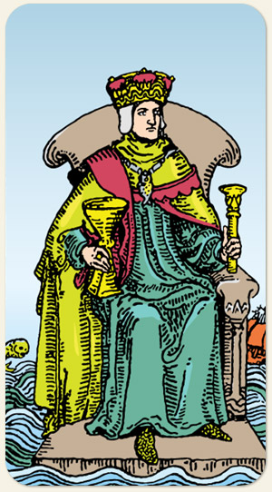

Rei de Copas
É o reino do coração, o Rei do Oceano, o Salvador, artista, o poeta, o dançarino, o ator.
Positivo: Pessoas amorosas, sensíveis médiuns. A Rainha de Copas é intuição pura, o Rei de Copas é a intuição com o Ar. Pessoas de fé, trabalhos voluntários, fala sobre amor verdadeiro, é um romântico incurável.
Negativo: Um banana, medroso, frouxo, infantilizado, mimado, egoísta, sempre preocupado com seus próprios desejos, tem uma relação negativa com a bebida e com narcóticos, o brega disfarçado de romântico, grudento. A ilusão de Copas e sua ligação com o psíquico, fala sobre obsessão espiritual e delírios, a água vira lama.
Símbolos: Poseidon, Baco.
Cores: Cor, Cor, Cor.